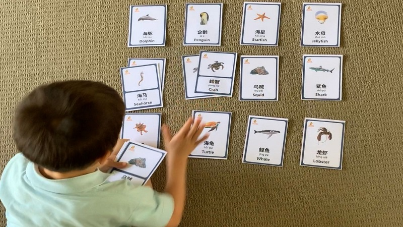

How to Learn a New Language Effectively
Learning a new language is one of the most valuable skills a person can develop in today’s global world. It not only allows you to communicate with people from different countries, but also helps you better understand their culture, traditions, and way of thinking. Whether you are learning a language for travel, work, education, or personal growth, the process can open many new opportunities and experiences.
However, language learning is not always easy. Many learners face challenges such as lack of motivation, difficulty remembering vocabulary, or fear of making mistakes while speaking. It is completely normal to feel confused or frustrated at times, especially in the early stages. The key is to stay patient and continue practicing, even when progress feels slow.
One of the most important aspects of successful language learning is consistency. Studying a little every day is much more effective than studying for long hours only once in a while. Regular exposure to the language helps your brain adapt and makes it easier to remember new words and grammar structures. In addition, combining different methods—such as reading, listening, speaking, and writing—can significantly improve your overall skills.
Another important factor is creating a comfortable learning environment. This can include watching movies in the target language, listening to podcasts, using mobile applications, or even changing the language settings on your devices. These small actions help you stay connected with the language in your daily life and make learning feel more natural.
Finally, it is important to remember that mistakes are a natural part of the learning process. Every mistake is an opportunity to improve and become more confident. Instead of being afraid of speaking incorrectly, try to focus on communication and expressing your ideas. Over time, your accuracy and fluency will naturally develop.
In conclusion, learning a language requires time, effort, and dedication, but the results are truly worth it. With the right strategies, a positive mindset, and regular practice, anyone can achieve their language goals and enjoy the journey along the way.
Introduction
Learning a new language is an exciting but sometimes difficult process. Many people start with enthusiasm, but later they lose motivation. However, with the right methods, it is possible to achieve great results and enjoy learning at the same time.
One of the most important factors is consistency. Even a short daily practice can be more effective than long study sessions once a week. Regular repetition helps learners remember vocabulary and understand grammar more naturally. In addition, it is useful to combine different activities such as reading, listening, speaking, and writing to develop all language skills.
Another helpful strategy is to make learning part of everyday life. For example, you can watch videos, listen to music, or use mobile applications in the target language. This allows you to hear how the language is used in real situations and improves your understanding over time.
It is also important not to be afraid of making mistakes. Mistakes are a natural part of learning and help you improve. The more you practice, the more confident you become. With patience, regular effort, and a positive attitude, language learning becomes not only effective but also enjoyable.
Why Learning a Language Is Important
Essential reasons to learn a language include many practical and personal advantages. First of all, it helps people communicate with others from different countries and build meaningful connections. In addition, learning a language improves memory, concentration, and overall thinking skills, as the brain becomes more active and flexible. It also opens new career opportunities, since many employers value candidates who can speak more than one language. Finally, knowing a foreign language allows you to travel more comfortably, understand local culture better, and feel more confident in new environments.
Essential reasons to learn language:
- it helps to communicate with people from different countries;
- it improves memory and thinking skills;
- it opens new career opportunities;
- it allows you to travel more comfortably.
Effective Learning Methods
There are many different methods that can help you learn a new language effectively, but not all of them work the same for every person. Some learners prefer to focus on grammar and rules, while others achieve better results through practice and communication. The most effective approach is to combine several techniques, such as listening, reading, speaking, and writing. This allows you to develop all language skills at the same time. In addition, using different resources, like videos, books, and mobile applications, can make the learning process more interesting and engaging. If you choose the right methods and stay consistent, you will notice steady progress over time.
It is also important to set clear and realistic goals. For example, you can aim to learn a certain number of new words each week or practice speaking for a few minutes every day. Small goals help you stay focused and motivated, and they make your progress easier to track. Over time, these small steps lead to significant improvement.
Another useful strategy is to learn vocabulary in context rather than memorizing single words. Learning phrases and example sentences helps you understand how words are used in real situations. This makes it easier to remember them and use them correctly when speaking or writing.
Moreover, regular revision plays a key role in language learning. Without repetition, it is easy to forget what you have learned. Reviewing vocabulary and grammar helps move information from short-term to long-term memory and strengthens your overall understanding.
Finally, staying motivated is essential for long-term success. Try to make the learning process enjoyable by choosing topics that interest you or activities that you like. When learning becomes part of your daily routine and something you look forward to, it becomes much easier to stay consistent and achieve your goals.
Practice Every Day
Consistency is the key to success. Even short daily practice is better than studying once a week for many hours. Regular learning helps your brain get used to the language and makes it easier to remember new words and grammar structures. Over time, this creates strong habits that support long-term progress.
In addition, daily practice keeps you connected to the language and prevents you from forgetting what you have already learned. Even 10–15 minutes a day can make a big difference if you stay consistent. You can use this time to review vocabulary, listen to short audio, or practice speaking.
It is also helpful to include different types of activities in your routine. For example, one day you can focus on reading, while another day you can practice listening or speaking. This variety keeps learning interesting and helps you develop all your skills more effectively.
By staying consistent and making language learning a part of your daily life, you will gradually become more confident and fluent.
Use Different Resources
Using a variety of resources is an important part of effective language learning. Different materials help you develop different skills and keep the process interesting and engaging. For example, videos and podcasts improve listening and pronunciation, while books help you expand your vocabulary and understand grammar in context. Mobile applications can make learning more interactive and convenient, especially for daily practice. By combining these resources with regular speaking practice and revision, you can build strong language skills and make steady progress.
- Use different resources:
- Watching videos
- Listening to podcasts
- Reading books
- Using mobile applications
- Practice speaking
- Review regularly
Learn Vocabulary in Context

It is better to learn words in sentences rather than separately. Focus on useful phrases. This helps you understand how words are used in real situations and makes it easier to remember them. When you learn phrases instead of single words, you also improve your speaking and writing skills more naturally. In addition, seeing words in context helps you avoid mistakes and use the correct grammar. Try to create your own examples and repeat them regularly to make the new vocabulary part of your active language.
Do Not Be Afraid of Mistakes
Mistakes are a natural part of learning. They help you understand what needs to be improved and guide you in the right direction. Instead of being afraid of making errors, try to see them as a useful learning tool. Every time you make a mistake and correct it, you remember the correct form better. It is important to stay confident and continue practicing, even if you are not perfect. Over time, your accuracy will improve, and you will feel more comfortable using the language.
Simple Daily Plan
Having a simple daily plan can make language learning more organized and effective. It helps you stay focused and ensures that you practice different skills every day. Even small tasks, such as learning a few new words or watching a short video, can lead to noticeable progress if you do them regularly. A clear plan also helps you build a routine and stay motivated, as you can easily track what you have done and see your improvement over time.
- Learn 10 new words
- Watch a short video
- Practice speaking
- Review
Conclusion
If you stay motivated, you will achieve great results. Motivation gives you the energy to keep practicing every day, even when learning feels difficult. Setting clear goals, celebrating small successes, and keeping learning enjoyable all help maintain your motivation. When you are motivated, it is easier to overcome challenges, stay consistent, and make steady progress in your language skills.